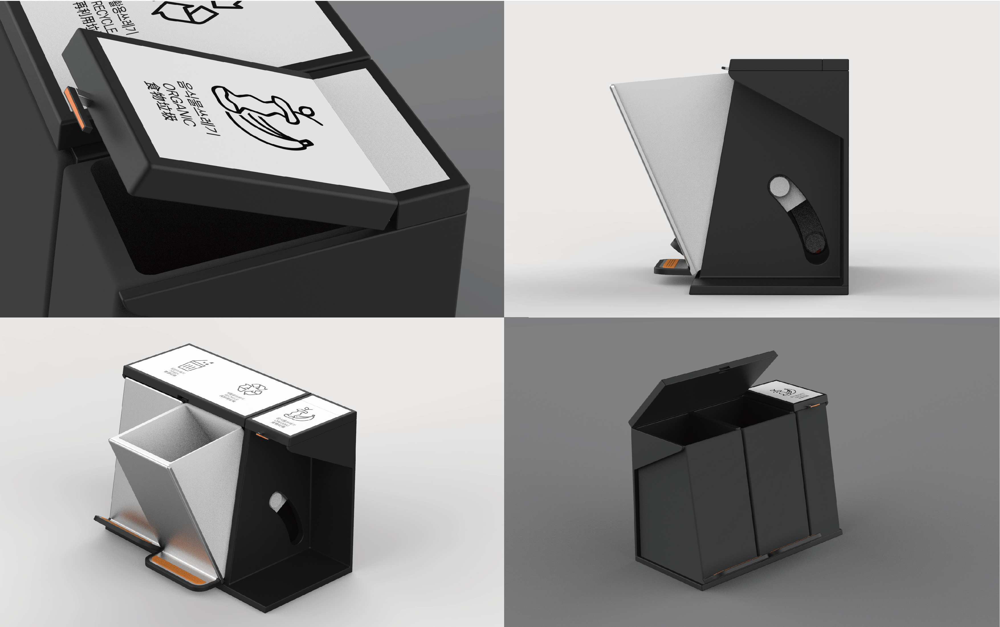
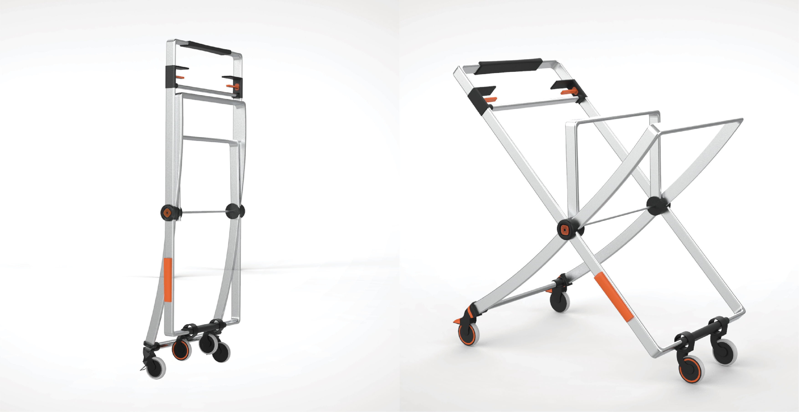
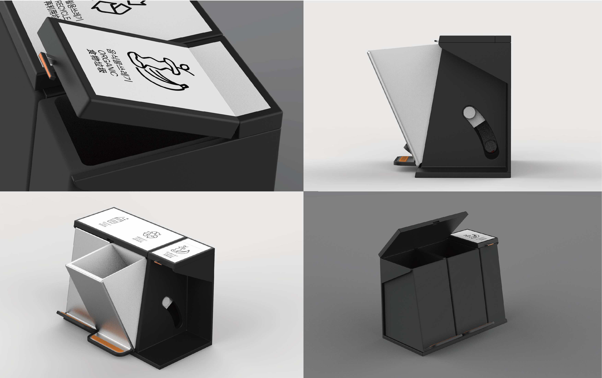
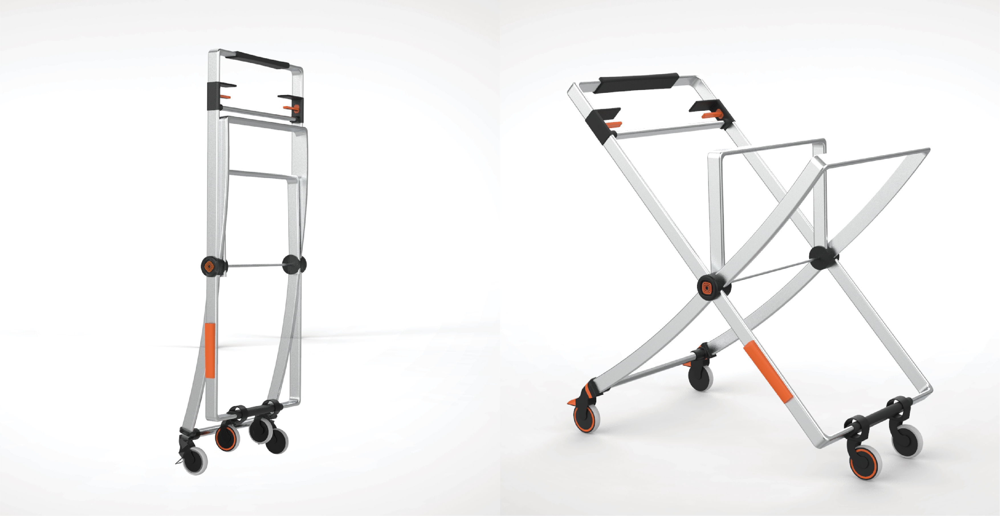

Smartwear
Cart&Trashcan
design for second-class citizen
 


윗 사진의 쓰레기통과 청수레는 정왕동 불법 쓰레기 투기 예방과 미화원분들의 편의를 위해 디자인한 것입니다. 쓰레기통은 레일식 구조를 사용하여 누구나 쉽게 밟아서 버릴 수 있게 하였고, 음식물 쓰레기통의 경우 터질 위험성이 있어 손잡이를 통해 열고 닫을 수 있게 디자인 하였습니다. 또한 픽토그램을 넣어 쉽게 분리수거가 가능하게 하였습니다. 청수레의 경우 미화원분들이 끌고 다니시기 편한 가벼운 재질을 사용하였으며, 정왕동 구조상 좁은 골목이 많아 좁고 긴 형태로 디자인하였습니다. 집에 가져가야 하기 때문에 접이식 구조로 디자인하였으며, 주황색의 포인트 컬러를 넣어 심미성을 높였습니다.